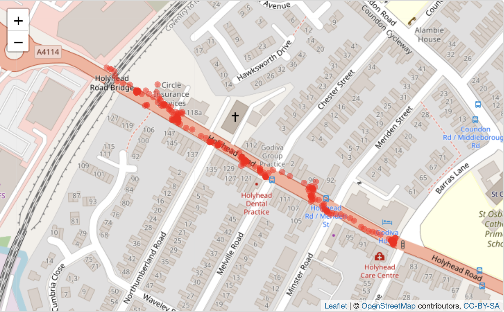
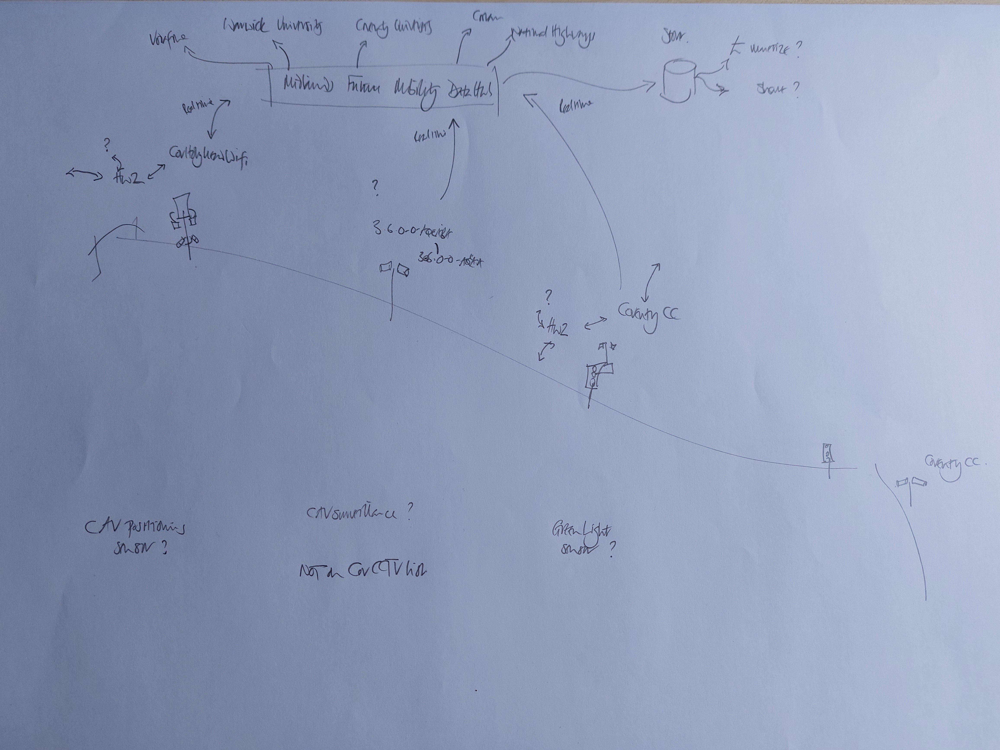

Map of the Holyhead Road walk
Map of the Holyhead Road IoT with WiFi
The blue circles are WiFi points and green circles are the Bluetooth Low Energy connections.
A simple sonification of the above data.
The sonification is set to 600BPM to reduce the playing time to under 3 minutes. The tones are set to play
roughly when they appear in the data.
The higher tones are the devices appearing through Bluetooth Low Energy scanning (or green in the map). The WiFi is the lower tone (or blue).
The duration is linked to the signal strength as registered by decibels so the tones may overlap.
Map of the relationships in the Holyhead Road walk
